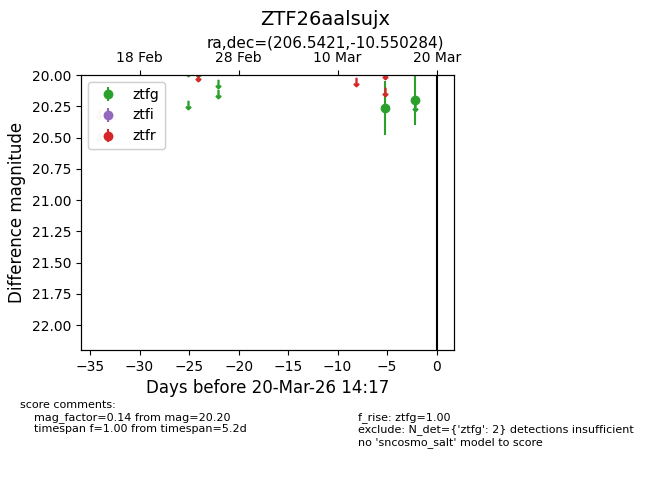
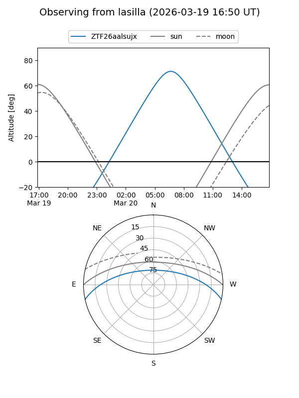
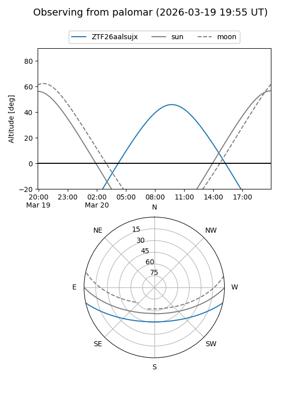

ZTF26aalsujx
Target ZTF26aalsujx at 2026-03-20 14:19
Aliases and brokers:
FINK: link
Lasair: link
ALeRCE: link
alt names
ZTF26aalsujx (ztf,fink_ztf)
Coordinates:
equatorial (ra, dec) = 206.5421,-10.55028
equatorial (HMS+DMS) = 13:46:10.10,-10:33:01.02
galactic (l, b) = (324.1651,+50.05155)
Flags:
Photometry:
last ztfg=20.20
2 ztfg detections
Lightcurve

Visibility


Additional plots